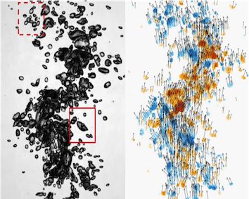
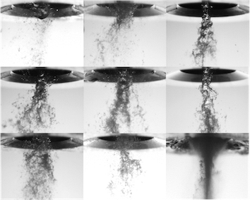
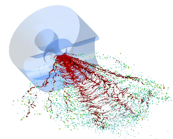
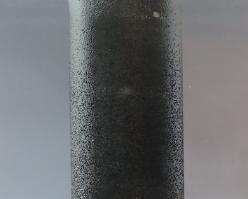
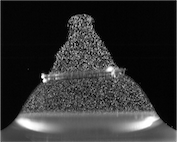
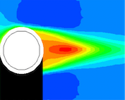

Interface Dynamics
Understanding the behavior and mechanism of the mass and momentum transfer through the fluidic interface is important to predict the global flow feature such as droplet size/velocity distribution in spray generation and fluidic mixing in bubbly flows. However, most previous studies have been limited on the canonical flows to enable the theoretical and numerical approach due to the presence of complex interfacial instabilies (e.g. Rayleigh-Taylor and Shear instabilities) and turbulence as well as lack of measurements with sufficient spatio-temporal resolution. To overcome this, I have designed the optimized experimental setup which can provide suffucient information for validating proposed theoretical hypothesis and, thereby, determining dominating interfacial mechanism in complicated interfacial problem, and I have developed novel flow measurement using CNN-based optical flow algorithm, which is non-invasive and has super spatio-temporal resolution .
Recent Publications
-
 Bubble velocimetry using the conventional and CNN-based optical flow algorithms (Scientific Reports, 2022)
We first quantify the bubble velocity with extreme bubble density upto 58% (maximum 11% for previous studies) by finetuning the CNN-based optical flow algorithm with the generated synthetic bubble dataset. Comparing with the conventional technique (PTV) as well as the classic optical flow algorithms such as Lucas-Kanade and Farnebäck method, the CNN-based model outperforms for all bubble densities in terms of accuracy and time cost.
-
 Analysis of the liquid column atomization by annular dual-nozzle gas jet flow
(Journal of Fluid Mechanics, 2022)The liquid atomization of the water column by two annualr gas jets (Reynolds number∼O(100,000) is investigated experimentally, depending on the nozzle geometry, the momentum flux ratio between jets. Through high-speed imaging visualization and PIV, we found that the liquid column is mainly differentiated through Rayleigh-Taylor instability and its corresponding wavelength accurately predicts the final droplet diameter. Also, the appearance conditions of four flow regimes are theoretically derived and validated using control volume analysis.
Collaboration with Industry
-
 Development of the physical-based model on the film thickness and the characteristics of the coating spray depending on the operation conditions
Collaborated with Daewoo Shipbuilding & Marine Engineering (2022)The end-to-end physical-based model is developed to estimate the film thickness and width depending on the fluid (e.g. viscosity and density) and work condition (i.e. applied pressure and gun speed). Each process of paint spray is modelled by thecontrol volume analysis (for membrane formation), similarity analysis (for spray development), and drop-impingement theory (for film formation) and validated with the numerical and experimental data.
-
 The wake characteristics of partially-superhydrophobic circular cylinder
Collaborated with Samsung Advanced Institute of Technology (2016)Using water tunnel, the effect of the superhydrophobic (SHPo) surface on the cylinder wake is studied experimentally. The time-varying condition of surface's wettability is captured using high-speed imaging. Through PIV measurement, it is found the SPHo coating with the optimal condition reduces the recirculation length of the wake by augmenting the flow fluctuation near the region of the flow separation.
Undergraduate Thesis (Main Advisor)
-
 Junwon Seo Seoul Nation University (2020)
Flow visualization on the air jet generated by the bubble rupture
-
 Suhwan Shim Seoul Nation University (2017)
Experimental study on the effects of superhydrophobic surfaces on the flow around a sphere